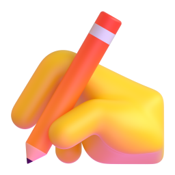

A 15-week publication writing course
From research question to publication-ready manuscript.
Develop a rigorous, ethical, and coherent research article in English. The course connects research design, literature synthesis, section-level drafting, responsible AI use, revision, and submission preparation as one continuous scholarly process.
Manuscript logic
- QuestionWhat should the study explain?
- EvidenceWhat supports the argument?
- MethodHow was the claim examined?
- ContributionWhy does the study matter?


One aligned pathway from a defensible research problem to an ethically transparent manuscript.
Course directory
Choose your point of entry.
Each page is designed for direct, independent use. Review the course rationale, continue a weekly task, copy a writing frame, confirm assessment criteria, or download the relevant lesson.
The scholarly pathway
Writing is not the final stage of research.
It is the process through which purpose, questions, methods, evidence, and contribution become visible—and therefore open to scholarly evaluation.

- 01
Frame
Define a researchable problem and a defensible scholarly gap.
- 02
Align
Connect purpose, questions, evidence, methods, and analysis.
- 03
Draft
Build each manuscript section around its rhetorical function.
- 04
Verify
Check claims, citations, data, ethical decisions, and AI-assisted work.
- 05
Revise
Respond to feedback and prepare the manuscript for its readership.
Start with the work